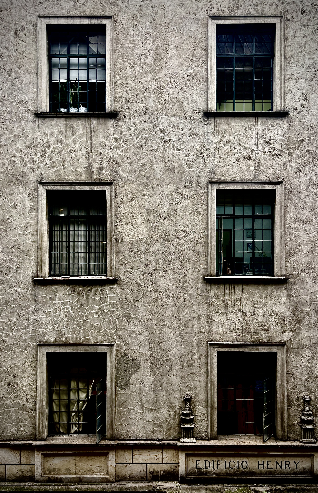
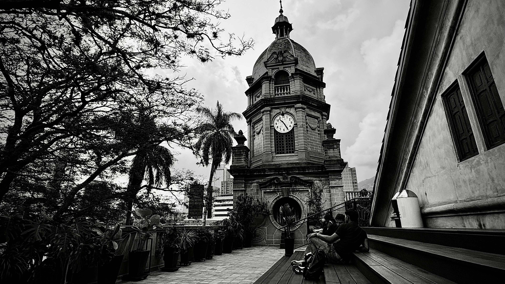
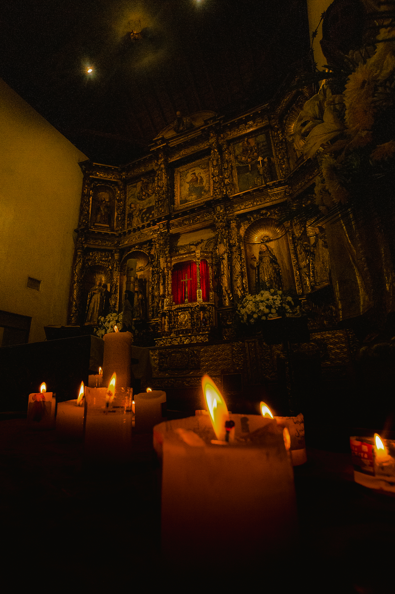
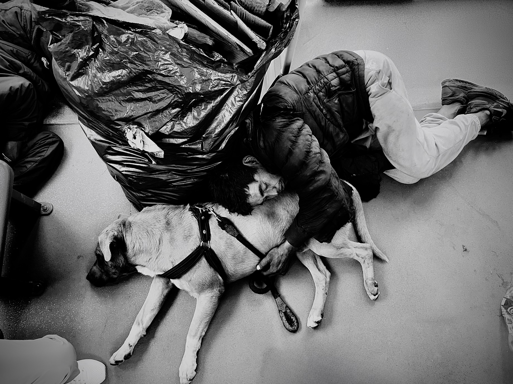
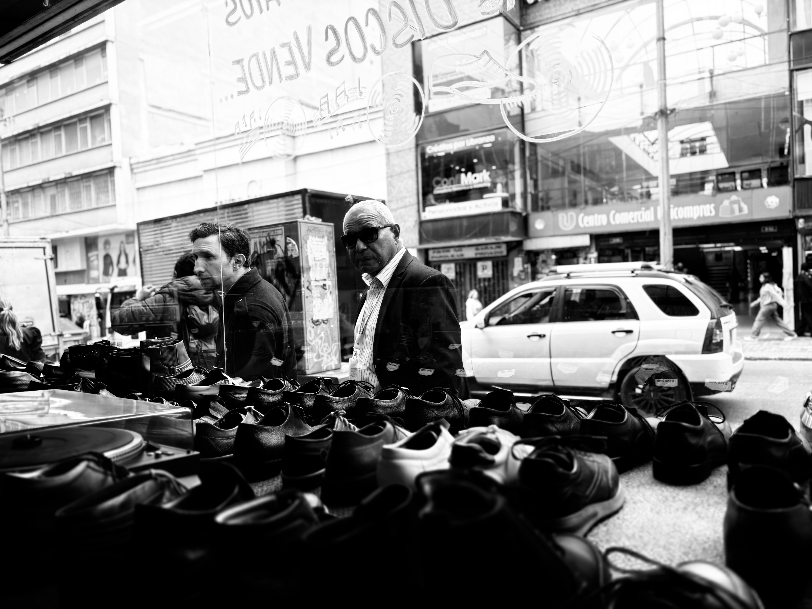

Crónicas
Asfálticas.
Fragmentos efímeros de orden y caos en la arquitectura humana. Una mirada fija a la estática de la calle, donde el blanco y negro desnuda la luz y el color solo interviene de forma sobria y residual.




